Reminder
Last week, we talk about some issues that may need or occur in the data analysis
Model Selection with Cross Validation
Dimension Reduction
Today, we are talk about categorical data anaylsis and robust statistics.
Install the packages using the code line given below.
install.packages("vcd","ggmosaic","ltm","polycor","ISLR","caret","corrplot","MASS")Install the InformationValue package by executing the
following command.
devtools::install_version("InformationValue", version = "1.2.3", repos = "http://cran.us.r-project.org")install the DMwR package by executing the following
command.
devtools::install_version("DMwR", version = "0.4.1", repos = "http://cran.us.r-project.org")Categorical Data Analysis
Categorical variables represent types of data which may be divided into groups. Examples of categorical variables are race, sex, age group, and educational level. While the latter two variables may also be considered in a numerical manner by using exact values for age and highest grade completed, it is often more informative to categorize such variables into a relatively small number of groups.
Analysis of categorical data mostly starts with the use of data tables.
Example
Please load vcd package and call Arthritis
data set. See the variable explanation below.
ID: patient ID.
Treatment: indicating treatment (Placebo, Treated).
Sex: indicating sex (Female, Male).
Age: age of patient.
Improved: ordered factor indicating treatment outcome (None, Some, Marked).
library(vcd)
data(Arthritis)
knitr::kable(head(Arthritis))| ID | Treatment | Sex | Age | Improved |
|---|---|---|---|---|
| 57 | Treated | Male | 27 | Some |
| 46 | Treated | Male | 29 | None |
| 77 | Treated | Male | 30 | None |
| 17 | Treated | Male | 32 | Marked |
| 36 | Treated | Male | 46 | Marked |
| 23 | Treated | Male | 58 | Marked |
The most basic thing is to create a frequency table. You can do it
using table() function.
Creating a frequency table for single variable
It is also known as one way frequency table.
table(Arthritis$Sex)##
## Female Male
## 59 25You can also create such a table with corresponding proportions.
However, you need to create a one way frequency table as object. After
this, we can use prop.table() function.
t<-table(Arthritis$Sex)
prop.table(t)##
## Female Male
## 0.702381 0.297619Creating a frequency table for two variables
It is also known as two way frequency table or contingency table. It
is created by table() function. For example, I would like
to create a table for treatment and improved.
t2<-table(Arthritis$Improved,Arthritis$Treatment)#first input is row, second input is column.
t2##
## Placebo Treated
## None 29 13
## Some 7 7
## Marked 7 21As you see from this output, the table does not show the margin sums.
If you are interested in counting margin sums, you can use
margin.table() function. Let’s consider previous
margin.table(t2,1) #for row sums##
## None Some Marked
## 42 14 28margin.table(t2,2) #for column sums##
## Placebo Treated
## 43 41Create a frequency table for 3 variables
It is also known as 3-way table. To do this, we will create a table
object, then use ftable() function.
You can also use structable() function from
vcd package.
t3<-table(Arthritis$Treatment,Arthritis$Sex,Arthritis$Improved)
#first input is the first row category.
#second input is the second row category.
#third input is the column category.
ftable(t3)## None Some Marked
##
## Placebo Female 19 7 6
## Male 10 0 1
## Treated Female 6 5 16
## Male 7 2 5Visualization of Frequency Table
As said before, the categorical data analysis involves the use of table. In such cases, visualization of the table plays an important role in the analysis.
If you would like to visualize the frequency table, you can use bar plot
The way of plotting contingency table is mosaic plot. A mosaic plot is a graphical display of the cell frequencies of a contingency table in which the area of boxes of the plot are proportional to the cell frequencies of the contingency table. This procedure can construct mosaic plots for up to four-way contingency tables.
Consider table for Improved vs Treatment.
library(ggmosaic)
library(ggplot2)
ggplot(data=Arthritis)+geom_mosaic(aes(x = product(Improved, Treatment)))+labs(x = "Treatment", y="Improved",title='Improved vs Treatment.')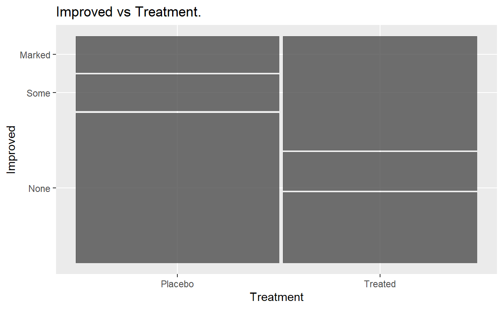
or you can use mosaicplot() base function directly.
mosaicplot(table(Arthritis$Treatment,Arthritis$Improved),main="Improved vs Treatment.")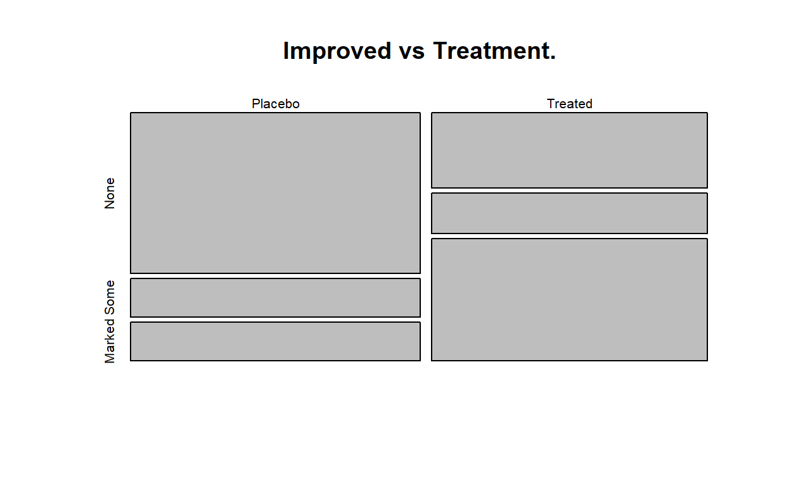
You can improve your plot by coloring.
library(ggmosaic)
ggplot(data=Arthritis)+geom_mosaic(aes(x = product(Improved, Treatment),fill=Improved))+labs(x = "Treatment", y="Improved",title='Improved vs Treatment.')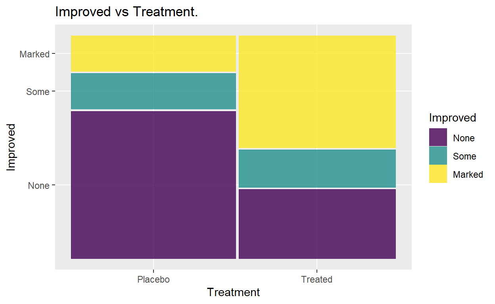
mosaicplot(table(Arthritis$Treatment,Arthritis$Improved),main="Improved vs Treatment.",col=c("darkred","steelblue","orange"))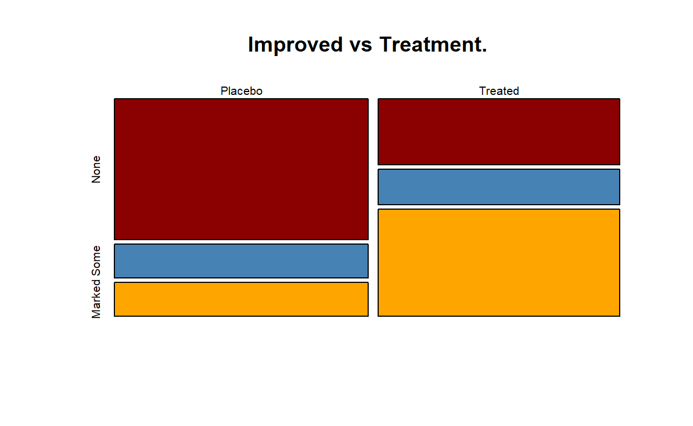
As you see most of the participants having placebo has no improvement, but most of the treated participant performed a remarkable improvement.
It is possible to consider more than two categorical variables for mosaic plot. Now, consider Treatment, Sex and Improved.
library(ggmosaic)
ggplot(data=Arthritis)+ geom_mosaic(aes(x = product(Improved, Treatment), fill=Improved, conds=product(Sex)))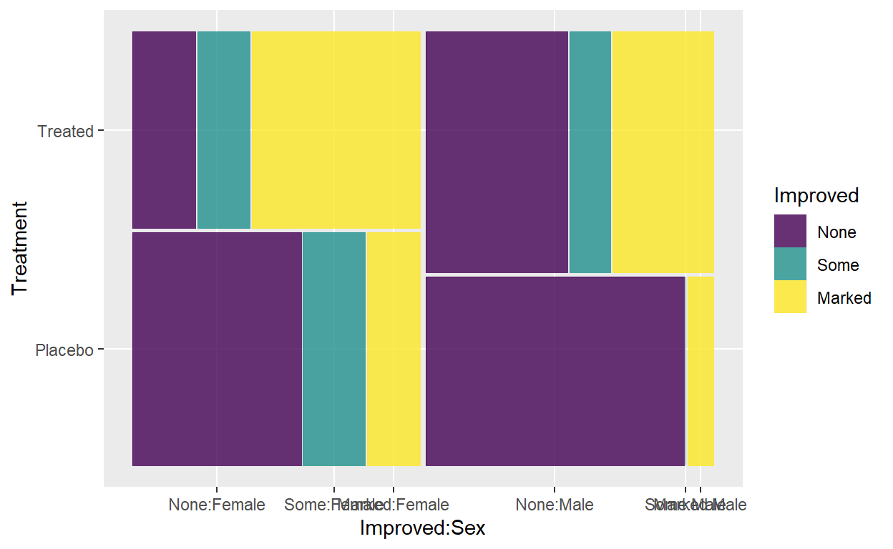
Note that when the number of included variable increases, the plot becomes more complicated and harder for interpretation.
Measure of Association
Measure of association, in statistics, any of various factors or coefficients used to quantify a relationship between two or more variables.
For 2 by 2 Tables
Odds Ratio
An odds ratio (OR) is a statistic that quantifies the strength of the association between two events, A and B. (Wikipedia, 2020)
Be careful, it is applied for 2x2 contingency table.
Consider epitools package and use oddsratio
function.
Let’s look at the relationship between treatment and sex.
or<-table(Arthritis$Sex,Arthritis$Treatment)
or##
## Placebo Treated
## Female 32 27
## Male 11 14library(epitools)## Warning: package 'epitools' was built under R version 4.1.1##
## Attaching package: 'epitools'## The following object is masked from 'package:vcd':
##
## oddsratiooddsratio(or)## $data
##
## Placebo Treated Total
## Female 32 27 59
## Male 11 14 25
## Total 43 41 84
##
## $measure
## odds ratio with 95% C.I.
## estimate lower upper
## Female 1.000000 NA NA
## Male 1.497389 0.5804767 3.945381
##
## $p.value
## two-sided
## midp.exact fisher.exact chi.square
## Female NA NA NA
## Male 0.4042094 0.4763301 0.3907756
##
## $correction
## [1] FALSE
##
## attr(,"method")
## [1] "median-unbiased estimate & mid-p exact CI"The output shows that individuals with placebo are 1.49 times higher for females compared to males but this is not statistically significant because the interval for OR includes 1, which indicates that there is no association.
Relative Risk
Relative risk is a ratio of the probability of an event occurring in the exposed group versus the probability of the event occurring in the non-exposed group. It is counted for 2 by 2 tables.
epitools::riskratio(or,rev='both',method = 'wald')## $data
##
## Treated Placebo Total
## Male 14 11 25
## Female 27 32 59
## Total 41 43 84
##
## $measure
## risk ratio with 95% C.I.
## estimate lower upper
## Male 1.000000 NA NA
## Female 1.232666 0.747275 2.033341
##
## $p.value
## two-sided
## midp.exact fisher.exact chi.square
## Male NA NA NA
## Female 0.4042094 0.4763301 0.3907756
##
## $correction
## [1] FALSE
##
## attr(,"method")
## [1] "Unconditional MLE & normal approximation (Wald) CI"Males have 1.233 (95% CI 0.747, 2.03) times the risk of treated compared to females but this is not statistically significant because the interval for OR includes 1, which indicates that there is no association.
Note that we can also say the risk of having placebo is 23% higher for females than males.
Yule’s Q
Yule’s Y, also known as the coefficient of colligation, is a measure of association between two binary variables. It is similar to correlation between two binary variables.
library(psych)## Warning: package 'psych' was built under R version 4.1.3##
## Attaching package: 'psych'## The following objects are masked from 'package:ggplot2':
##
## %+%, alphayules_q<-Yule(or)
yules_q## [1] 0.2026846As we can say, there is no strong association between participants sex and treatment type since Yule’s Q is 0.2026846.
For i by j Tables
\(i\geq 2\), \(j \geq 2\)
Chi-Square Statistics
The Chi Square statistic is commonly used for testing relationships between categorical variables. The null hypothesis of the Chi-Square test is that no relationship exists on the categorical variables in the population; they are independent.
Let’s consider Treatment and Improved. Let’s call the corresponding table.
t2##
## Placebo Treated
## None 29 13
## Some 7 7
## Marked 7 21The hypothesis for this process is as follows;
\(H_0\) = Treatment and Improvement are independent.
\(H_1\) = Treatment and Improvement are not independent.
You can conduct the test using chisq.test function. The
input of this function is supposed to be table
chisq.test(t2)##
## Pearson's Chi-squared test
##
## data: t2
## X-squared = 13.055, df = 2, p-value = 0.001463Since p value less than \(\alpha\), we reject \(H_0\). Therefore, we are 95% confident that there is a significant relationship between Treatment and Improvement.
Cramer’s V
In statistics, Cramer’s V ( is a measure of association between two nominal variables, giving a value between 0 and +1 (inclusive). It is based on Pearson’s chi-squared statistic. (Wikipedia,2020)
Cramer’s V can be found by using assocstats() in
vcdpackage. The input of the function is
table object.
library(vcd)
assocstats(t2)## X^2 df P(> X^2)
## Likelihood Ratio 13.530 2 0.0011536
## Pearson 13.055 2 0.0014626
##
## Phi-Coefficient : NA
## Contingency Coeff.: 0.367
## Cramer's V : 0.394It is seen that the coefficient is 0.394, so we can say that there is a weak positive relationship between treatment and improvement.
Correlation between a continuous and categorical variable
If we are interested in the relationship between one continuous and one binary categorical variable (i,e a categorical variable with two levels), we can use point biserial correlation.
To do so, we use biserial.cor function from ltm
package.
I am interested in the relationship between Age and Treatment. (It is binary)
library(ltm)## Warning: package 'ltm' was built under R version 4.1.3## Zorunlu paket yükleniyor: MASS## Warning: package 'MASS' was built under R version 4.1.3## Zorunlu paket yükleniyor: msm## Warning: package 'msm' was built under R version 4.1.3## Zorunlu paket yükleniyor: polycor## Warning: package 'polycor' was built under R version 4.1.3##
## Attaching package: 'polycor'## The following object is masked from 'package:psych':
##
## polyserial##
## Attaching package: 'ltm'## The following object is masked from 'package:psych':
##
## factor.scoresbscor<- biserial.cor(Arthritis$Age,Arthritis$Treatment)
bscor## [1] -0.09448719As you see, the coefficient is -0.0944872. It indicates that there is a weak relationship between these two concepts.
If we are interested in the relationship between one continuous and one ordinal variable, we can use biserial correlation.
library(polycor)
ps_cor<-polyserial(Arthritis$Age,Arthritis$Improved)
ps_cor## [1] 0.3148726As you see, the coefficient is 0.3148726. It indicates that there is a weak relationship between these two concepts.
Exercise Time
Please click here to download the exercise.
Classification and Logistic Regression
Classification
So far, we have discussed methods that primarily focus on modeling and predicting quantitative response variables, such as fertility. Linear regression and related techniques like Ridge and LASSO are well-suited for these scenarios and perform effectively.
However, when the response variable is categorical, the problem is no longer referred to as a regression problem but is instead categorized as a classification problem In classification, the objective is to assign each observation to a specific category or class based on a set of predictor variables, denoted as X.
The goal of classification is to develop a model that can accurately classify new observations into predefined categories based on their predictor variable values. This differs from regression, where the focus is on predicting a continuous numerical value.
In summary, when dealing with categorical response variables, the main objective is to perform classification, which involves assigning observations to specific categories or classes based on predictor variables.
The simplest classification problem exists when the response variable has two categories. (Binary response)
In the logit model, the log odds of the outcome is modeled as a linear combination of the predictor variables.
Logistic Regression
Logistic regression, also called a logit model, is used to model dichotomous outcome variables. It is developed by David Cox in 1958 for modeling categorical responses.
For example, statistics students at METU could be categorized as the students who have Macbook Air (\(Y=1\)) and who do not have Macbook Air (\(Y=0\))
In the prediction of the such response variables, logistic regression addresses the problem of estimating a probability \(P(Y=1)\).
\[ p(x) = P(Y = 1 \mid {X = x}) \]
The logistic regression model uses a function, called the logistic function, to model \(P(Y=1)\).
\[ p(x) = P(Y = 1 \mid {X = x}) = \frac{1}{1+exp-(\beta_0 + \beta_1 x_1 + \beta_2 x_2 + \cdots + \beta_p x_p)} \]
With a little bit of algebraic work, the general form of model is written as follows
\[ \log\left(\frac{p(x)}{1 - p(x)}\right) = \beta_0 + \beta_1 x_1 + \beta_2 x_2 + \cdots + \beta_p x_p. \]
Here \(p(x)/(1-p(x))\) is called the odds. Thence, the log odds of the outcome is modeled as a linear combination of the predictor variables in logistic regression.
Application
The motivating example for this lab is the Default data
set from ISLR package.
The data set includes the information on ten thousand customers. The aim here is to predict which customers will default on their credit card debt.(i.e cannot pay the dept.)
library(ISLR)
head(Default)Check the dimension of the data.
dim(Default)## [1] 10000 4After this, we should divide our data set as train and test to check the validity of the model.
dplyr::glimpse(Default)## Rows: 10,000
## Columns: 4
## $ default <fct> No, No, No, No, No, No, No, No, No, No, No, No, No, No, No, No~
## $ student <fct> No, Yes, No, No, No, Yes, No, Yes, No, No, Yes, Yes, No, No, N~
## $ balance <dbl> 729.5265, 817.1804, 1073.5492, 529.2506, 785.6559, 919.5885, 8~
## $ income <dbl> 44361.625, 12106.135, 31767.139, 35704.494, 38463.496, 7491.55~Obtain the summary of the data. (Thereby, we also check the missing value.)
summary(Default)## default student balance income
## No :9667 No :7056 Min. : 0.0 Min. : 772
## Yes: 333 Yes:2944 1st Qu.: 481.7 1st Qu.:21340
## Median : 823.6 Median :34553
## Mean : 835.4 Mean :33517
## 3rd Qu.:1166.3 3rd Qu.:43808
## Max. :2654.3 Max. :73554The response variable is default. Thus, it is better to
check the proportion of the levels.
prop.table(table(Default$default))##
## No Yes
## 0.9667 0.0333set.seed(42)
default_idx = sample(nrow(Default), 8000) #produce index number for train data
default_trn = Default[default_idx, ]
default_tst = Default[-default_idx, ]Construct the proportion of response variable.
prop.table(table(default_trn$default))##
## No Yes
## 0.966 0.034prop.table(table(default_tst$default))##
## No Yes
## 0.9695 0.0305As seen, the proportion of the levels of the response are close to each other and we kept the original proportion. This has to be in the regression model.
Simple Logistic Regression
We start with a single predictor example, using balance
as our single predictor.
Fitting this model looks very similar to fitting a simple linear
regression. Instead of lm() we use glm(). The
only other difference is the use of family = "binomial"
which indicates that we have a two-class categorical response. Using
glm() with family = "gaussian" would perform
the usual linear regression.
model_glm = glm(default ~ balance, data = default_trn, family = "binomial")After fitting the model, see its summary.
summary(model_glm)##
## Call:
## glm(formula = default ~ balance, family = "binomial", data = default_trn)
##
## Deviance Residuals:
## Min 1Q Median 3Q Max
## -2.3063 -0.1438 -0.0568 -0.0212 3.7822
##
## Coefficients:
## Estimate Std. Error z value Pr(>|z|)
## (Intercept) -1.081e+01 4.099e-01 -26.36 <2e-16 ***
## balance 5.601e-03 2.493e-04 22.47 <2e-16 ***
## ---
## Signif. codes: 0 '***' 0.001 '**' 0.01 '*' 0.05 '.' 0.1 ' ' 1
##
## (Dispersion parameter for binomial family taken to be 1)
##
## Null deviance: 2374.1 on 7999 degrees of freedom
## Residual deviance: 1274.4 on 7998 degrees of freedom
## AIC: 1278.4
##
## Number of Fisher Scoring iterations: 8The probabilty of defaulting on the credit card dept is estimated by the following equation
\[ \hat P(Default=Yes) = \frac{exp(-10.81 + 0.005601*balance)}{(1+exp(-10.81 + 0.005601*balance))} \]
We start to check the significance of the model. So, the following hypothesis is conducted and null and residual deviance values are used. Then, this difference is compared to \(\chi^2_2\).
\(H_0\)= \(\beta_0\)=\(\beta_1\)=0 vs \(H_1\)= At least one of them is different.
ifelse ((2374.1-1274.4)< qchisq(0.95,2),"Fail to Reject Ho","Reject Ho")## [1] "Reject Ho"Instead, you can use the following function.
LikelihoodRatioTest <- function(model, conf.level = 0.95) {
dev <- model$null.deviance - model$deviance
dof <- model$df.null - model$df.residual
if (dev > qchisq(conf.level, dof)) { print("At least one of the explanatory variables are significant")
} else print("This model is not significant")
}LikelihoodRatioTest(model_glm)## [1] "At least one of the explanatory variables are significant"More statistically, you can also type
anova(model_glm, test = "Chisq")It is seen that the overall model is significant. After that, the model coefficient is examined.(See model output.)
There are several ways to interpret the coefficients in the logistic regression.
Balance has significantly positive effect on the log odds of default status.
The increment in Balance increase the chance of defaulting on credit card debt.
More mathematically,
The expected change in log odds of defaulting on credit card debt for one unit increase in the average balance is 0.0056.
Instead, more preferably, the odds ratio should be calculated as exponentiating the model parameters. The one unit increment in the balance results increases the chance of defaulting on by \(0.056\%\) \(((e^{0.00056}= 1.00056) - 1)\).
The next thing we should understand is how the predict()
function works with glm(). So, lets look at some
predictions.
head(predict(model_glm))## 2369 5273 9290 1252 8826 356
## -5.523309 -5.005989 -5.153738 -4.109757 -6.722855 -6.788078By default, predict.glm() uses
type = "link".
head(predict(model_glm, type = "link"))## 2369 5273 9290 1252 8826 356
## -5.523309 -5.005989 -5.153738 -4.109757 -6.722855 -6.788078That is, R is returning
\[ \hat{\beta}_0 + \hat{\beta}_1 x_1 + \hat{\beta}_2 x_2 + \cdots + \hat{\beta}_p x_p \]
for each observation.
Importantly, these are not predicted probabilities. To obtain the predicted probabilities
\[ \hat{p}(x) = \hat{P}(Y = 1 \mid X = x) \]
we need to use type = "response"
head(predict(model_glm, type = "response"))## 2369 5273 9290 1252 8826 356
## 0.003976737 0.006653152 0.005744575 0.016146766 0.001201653 0.001125864Note that these are probabilities, not
classifications. To obtain classifications, we will need to compare to
the correct cutoff value with an ifelse() statement.
#model_glm_pred = ifelse(predict(model_glm, type = "link") > 0, "Yes", "No")
model_glm_pred = ifelse(predict(model_glm, type = "response") > 0.5, "Yes", "No")The line that is run is performing
\[ \hat{C}(x) = \begin{cases} 1 & \hat{p}(x) > 0.5 \\ 0 & \hat{p}(x) \leq 0.5 \end{cases} \]
where
\[ \hat{p}(x) = \hat{P}(Y = 1 \mid X = x). \]
The commented line, which would give the same results, is performing
\[ \hat{C}(x) = \begin{cases} 1 & \hat{f}(x) > 0 \\ 0 & \hat{f}(x) \leq 0 \end{cases} \]
where
\[ \hat{f}(x) =\hat{\beta}_0 + \hat{\beta}_1 x_1 + \hat{\beta}_2 x_2 + \cdots + \hat{\beta}_p x_p. \]
Once we have classifications, we can calculate metrics such as the trainging classification error rate.
calc_class_err = function(actual, predicted) {
mean(actual != predicted)
}calc_class_err(actual = default_trn$default, predicted = model_glm_pred)## [1] 0.027875As you see, the classification error rate for train data is approximately 3%, which is OK. In addition to this metric, we should consider accuracy, sensitivity and specificity which are obtained from confusion matrix.
One can make a confusion matrix to summarize them
\[ \begin{array}{|c|c|c|} \hline & \text { Positive True Value } & \text { Negative True Value } \\ \hline \text { Positive Prediction } & \text { True positive } & \text { False positive } \\ \hline \text { Negative Prediction } & \text { False negative } & \text { True negative } \\ \hline \end{array} \]
Sensitivity, specificity and accuracy are described in terms of TP, TN, FN and FP.
\[ \textbf{Sensitivity}= \frac{TP}{(TP + FN)} = \frac{\text{(Number of true positive assessment)}}{\text{(Number of all positive assessment)}} \]
\[ \textbf{Specificity}= \frac{TN}{(TN + FP)} = \frac{\text{(Number of true negative assessment)}}{\text{(Number of all negative assessment)}} \]
\[ \textbf{Accuracy}= \frac{(TN + TP)}{(TN+TP+FN+FP)} = \frac{\text{(Number of correct assessments)}}{\text{(Number of all assessments)}} \]
As suggested by above equations, sensitivity is the proportion of true positives that are correctly identified by a diagnostic test. It shows how good the test is at detecting a disease.
Specificity is the proportion of the true negatives correctly identified by a diagnostic test. It suggests how good the test is at identifying normal (negative) condition.
Accuracy is the proportion of true results, either true positive or true negative, in a population. It measures the degree of veracity of a diagnostic test on a condition.
We wish to have a model with high sensitivity, specificity and accuracy. (greater than 0.8) However, this rarely occurs. So, select a model having two high metrics.
To calculate them in R quickly, the table() and
confusionMatrix() functions can be used.
train_tab = table(predicted = model_glm_pred, actual = default_trn$default)
library(caret)
train_con_mat = confusionMatrix(train_tab, positive = "Yes")
c(train_con_mat$overall["Accuracy"],
train_con_mat$byClass["Sensitivity"],
train_con_mat$byClass["Specificity"])## Accuracy Sensitivity Specificity
## 0.9721250 0.3161765 0.9952122As you see, we have high accuracy and specificity, but low sensitivity. However, these are not enough for talking about the goodness of the model because these metrics are calculated for training case, not test case.
You can use mosaic plot to visualize your confusion matrix.
mosaicplot(train_tab)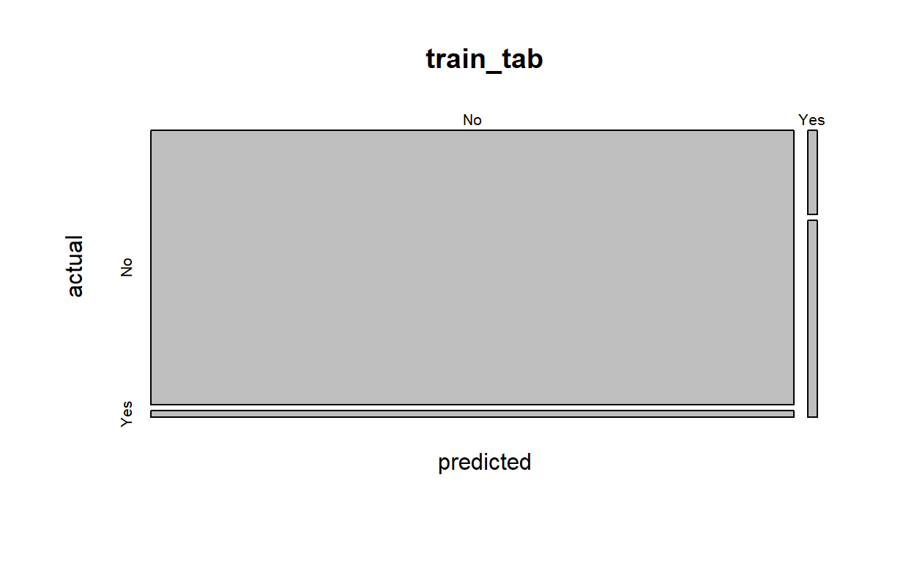
This visual clearly shows why the sensivity is low and specifity is high for our model.
Now, we can calculate them for the test case.
model_glm_pred_test= ifelse(predict(model_glm, type = "response",newdata = default_tst) > 0.5, "Yes", "No")
#As you see we use newdata argument that equals to test datatest_tab = table(predicted = model_glm_pred_test, actual = default_tst$default)
library(caret)
test_con_mat = confusionMatrix(test_tab, positive = "Yes")
c(test_con_mat$overall["Accuracy"],
test_con_mat$byClass["Sensitivity"],
test_con_mat$byClass["Specificity"])## Accuracy Sensitivity Specificity
## 0.9725000 0.2459016 0.9953584As you see, we have high accuracy and specificity, but low sensitivity.
Multiple Logistic Regression
If we include more than one predictors in the model, the way used is called multiple logistic regression model. Before the model, examine the relationship between predictors to avoid of multicollinearity problem.
library(corrplot)
correlations <- cor(default_trn[,3:4])
corrplot(correlations, method="circle")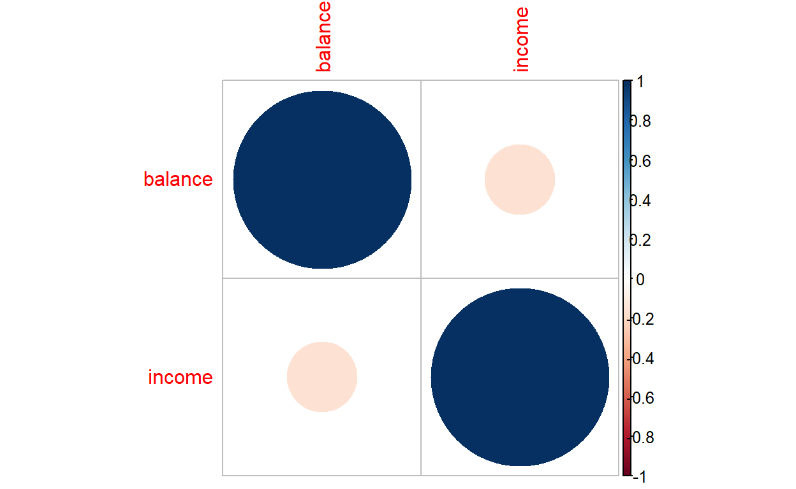
As you see, there is no strong association between predictors. That means there is no mutlicollinearity problem.
When you are dealing with multiple logistic regression, the starting with visuals are helpful to get an insight about the data.
Let us draw a scatter plot between the numeric variables in the data which are colored by default status.
To obtain better visuals, we recode our response variable as 0 and 1
library(dplyr)## Warning: package 'dplyr' was built under R version 4.1.3##
## Attaching package: 'dplyr'## The following object is masked from 'package:MASS':
##
## select## The following objects are masked from 'package:stats':
##
## filter, lag## The following objects are masked from 'package:base':
##
## intersect, setdiff, setequal, uniondefault_trn1<-default_trn%>%mutate(default_number = recode(default, "Yes"=1,"No"=0))
head(default_trn1)library(ggplot2)
ggplot(default_trn1,aes(x=income,y=balance,color=default_number))+geom_point(alpha=0.5)+scale_color_gradient2(midpoint=0.5)+theme_bw()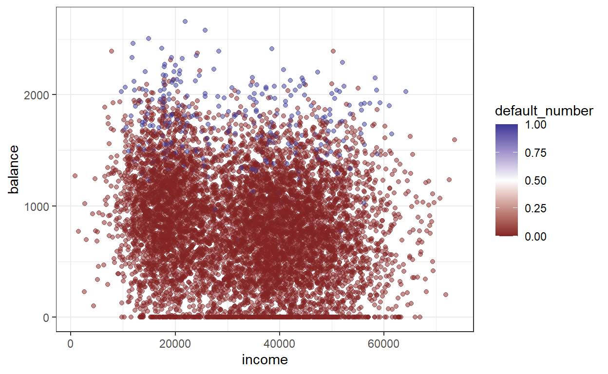
model_glm_multi = glm(default ~ ., data = default_trn, family = "binomial")After fitting the model, display its summary.
summary(model_glm_multi)##
## Call:
## glm(formula = default ~ ., family = "binomial", data = default_trn)
##
## Deviance Residuals:
## Min 1Q Median 3Q Max
## -2.4691 -0.1403 -0.0547 -0.0199 3.7628
##
## Coefficients:
## Estimate Std. Error z value Pr(>|z|)
## (Intercept) -1.086e+01 5.474e-01 -19.840 <2e-16 ***
## studentYes -6.501e-01 2.618e-01 -2.484 0.013 *
## balance 5.797e-03 2.593e-04 22.351 <2e-16 ***
## income 1.683e-08 9.132e-06 0.002 0.999
## ---
## Signif. codes: 0 '***' 0.001 '**' 0.01 '*' 0.05 '.' 0.1 ' ' 1
##
## (Dispersion parameter for binomial family taken to be 1)
##
## Null deviance: 2374.1 on 7999 degrees of freedom
## Residual deviance: 1257.7 on 7996 degrees of freedom
## AIC: 1265.7
##
## Number of Fisher Scoring iterations: 8We start to check the significance of the model. For this purpose, the following hypothesis is conducted and null and residual deviance values are used to test. Then, the difference between null and residual deviance is compared to chi-square statistic with degrees of freedom 4 because 4 represents the number of parameters that we tested.
\(H_0\)= \(\beta_0\)=\(\beta_1\)=\(\beta_2\)=\(\beta_3\)=0 vs \(H_1\)= At least one of them is different.
LikelihoodRatioTest(model_glm_multi)## [1] "At least one of the explanatory variables are significant"anova(model_glm_multi, test = "Chisq")As you see the model is significant on the average.
After checking this, the coefficients are examined. Among three
predictors, all of them contribute model significantly except
income.
Balance has significantly positive effect on the log odds of default
status. The expected change in log odds of default for one unit increase
in the average balance is 0.0058. We can also say that one unit
increment in the balance increases the chance of defaulting on the dept
by \(0.58%\) \(((e^{0.00058}= 1.00058)-1)\).
In addition to this, we can say that the log odds of default is -0.65 times less for student customers compared to other. In other words, we can say the default status is \(48\%\) less for students compared to others. \(e^{-0.65}= 0.52\) \((1-0.52=0.48=48%)\)
Check multicollinearity formally.
car::vif(model_glm_multi)## student balance income
## 2.740601 1.061902 2.663922It is verified that there is no multicollinearity problem as we expect. (See above no correlation among predictors.)
Question
Is there any confounding in this problem?
Now, lets calculate the performance metrics for the train data.
model_glm_pred_train= ifelse(predict(model_glm_multi, type = "response",newdata = default_trn) > 0.5, "Yes", "No")
#As you see we use newdata argument that equals to test datatrain_tab = table(predicted = model_glm_pred_train, actual = default_trn$default)
library(caret)
test_con_mat = confusionMatrix(train_tab, positive = "Yes")
c(test_con_mat$overall["Accuracy"],
test_con_mat$byClass["Sensitivity"],
test_con_mat$byClass["Specificity"])## Accuracy Sensitivity Specificity
## 0.9727500 0.3198529 0.9957298We can visualize the performance of our model on the train data. In doing so,
First we create an object
default_numberthat includes our probabilities obtained from trained data.Then, we bind this object with the covariates from the train data and make it a new data frame.
Lastly, we add these predicted probabilities to the plot drawn above by adding second
geom_point()function.
default_number<-predict(model_glm_multi, type = "response",newdata = default_trn)
predicted_data<-cbind(default_number,(default_trn[,2:4]))library(ggplot2)
ggplot(default_trn1,aes(x=income,y=balance,color=default_number))+geom_point(alpha=0.5)+scale_color_gradient2(midpoint=0.5)+theme_bw()+geom_point(data=predicted_data,size =1,shape=0.3)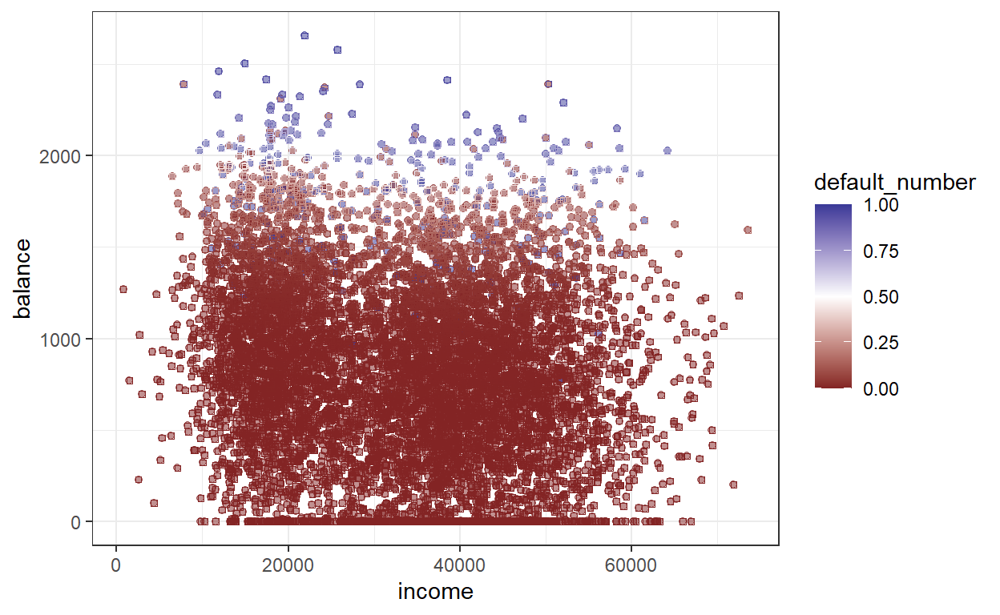
Now, lets calculate the performance metrics for the test data.
model_glm_pred_test= ifelse(predict(model_glm_multi, type = "response",newdata = default_tst) > 0.5, "Yes", "No")
#As you see we use newdata argument that equals to test dataIn this code, 0.5 is the cutoff value generally used in the literature. As stated before, we estimate the probabilities by using predict function. Then, we say that if the estimated probability is greater than the defined cutoff value, then it is coded as 1 or Yes. Otherwise, it is zero.
test_tab = table(predicted = model_glm_pred_test, actual = default_tst$default)
library(caret)
test_con_mat = confusionMatrix(test_tab, positive = "Yes")
c(test_con_mat$overall["Accuracy"],
test_con_mat$byClass["Sensitivity"],
test_con_mat$byClass["Specificity"])## Accuracy Sensitivity Specificity
## 0.9755000 0.3114754 0.9963899As you see, we have high accuracy and specificity, but low sensitivity. However, we can say that our model can be OK on the average.
Here, I wanna mention an important issue, cutoff point.
Consider different cutoff points and see the performance of the model. In other words, obtain predictions using a low, medium, and high cutoff. (0.1, 0.5, and 0.9)
For 0.1
model_glm_pred_test_0.1= ifelse(predict(model_glm_multi, type = "response",newdata = default_tst) > 0.1, "Yes", "No")
#As you see we use newdata argument that equals to test datatest_tab = table(predicted = model_glm_pred_test_0.1, actual = default_tst$default)
library(caret)
test_con_mat = confusionMatrix(test_tab, positive = "Yes")
c(test_con_mat$overall["Accuracy"],
test_con_mat$byClass["Sensitivity"],
test_con_mat$byClass["Specificity"])## Accuracy Sensitivity Specificity
## 0.9375000 0.7213115 0.9443012For 0.5
model_glm_pred_test_0.5= ifelse(predict(model_glm_multi, type = "response",newdata = default_tst) > 0.5, "Yes", "No")
#As you see we use newdata argument that equals to test datatest_tab = table(predicted = model_glm_pred_test_0.5, actual = default_tst$default)
library(caret)
test_con_mat = confusionMatrix(test_tab, positive = "Yes")
c(test_con_mat$overall["Accuracy"],
test_con_mat$byClass["Sensitivity"],
test_con_mat$byClass["Specificity"])## Accuracy Sensitivity Specificity
## 0.9755000 0.3114754 0.9963899For 0.9
model_glm_pred_test_0.9= ifelse(predict(model_glm_multi, type = "response",newdata = default_tst) > 0.9, "Yes", "No")
#As you see we use newdata argument that equals to test datatest_tab = table(predicted = model_glm_pred_test_0.9, actual = default_tst$default)
library(caret)
test_con_mat = confusionMatrix(test_tab, positive = "Yes")
c(test_con_mat$overall["Accuracy"],
test_con_mat$byClass["Sensitivity"],
test_con_mat$byClass["Specificity"])## Accuracy Sensitivity Specificity
## 0.97050000 0.03278689 1.00000000As you see the model gives its best for the value of 0.1. You can also try different ways to obtain optimum cutoff value
prediction<-predict(model_glm_multi, type = "response",newdata = default_tst)
library(InformationValue)##
## Attaching package: 'InformationValue'## The following objects are masked from 'package:caret':
##
## confusionMatrix, precision, sensitivity, specificityoptCutOff <- optimalCutoff(default_tst$default, prediction)[1]
optCutOff## [1] 0.004064476As seen best cutoff for our problem is 0.0040645 by the package. Try this!
model_glm_pred_test_opt= ifelse(predict(model_glm_multi, type = "response",newdata = default_tst) > 0.004, "Yes", "No")
test_tab = table(predicted = model_glm_pred_test_opt, actual = default_tst$default)
library(caret)
test_con_mat = confusionMatrix(test_tab)
c(test_con_mat$overall["Accuracy"],
test_con_mat$byClass["Sensitivity"],
test_con_mat$byClass["Specificity"])
Accuracy Sensitivity Specificity
0.6385000 0.6276431 0.9836066 What is AUC - ROC curve?
AUC - ROC curve is a performance measurement for classification problem at various thresholds settings. ROC is a probability curve and AUC represents degree or measure of separability. It tells how much model is capable of distinguishing between classes. Higher the AUC, better the model is at predicting 0s as 0s and 1s as 1s.
To draw this curve, we can consider pROC package.
library(pROC)
test_prob=predict(model_glm_multi, type = "response",newdata = default_tst)
test_roc = roc(default_tst$default ~ test_prob, plot = TRUE, print.auc = TRUE)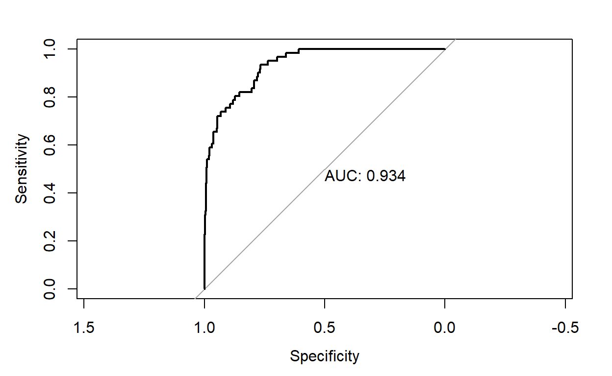
as.numeric(test_roc$auc)## [1] 0.9340289A good model will have a high AUC, that is as often as possible a high sensitivity and specificity.
Multinomial Logistic Regression
What if the response contains more than two categories? For that we need multinomial logistic regression.
\[ P(Y = k \mid { X = x}) = \frac{e^{\beta_{0k} + \beta_{1k} x_1 + \cdots + + \beta_{pk} x_p}}{\sum_{g = 1}^{G} e^{\beta_{0g} + \beta_{1g} x_1 + \cdots + \beta_{pg} x_p}} \]
Exercise Time
Please click here and download your exercise.
Robust Statistics
Assume that you are estimating a parameter from a distribution \(f(x)\) using Maximum Likelihood Estimator. However, the data has actually distribution \(g(x)\). In this case, you obtain an estimator which leads to wrong inference.
Suppose that you are interested in fitting a linear regression because you get the linear relationship between your response and predictor. However, there is a problem that the response does not have normal distribution because of the outliers in the sample.
Robust statistics arises as a solution for such cases.
M-Estimator
The M-estimator is a robust regression method often used as an alternative to the least squares method when data has outliers, extreme observations, or does not follow a normal distribution.
While the M indicates that M estimation is of the maximum likelihood type (Susanti et. al, 2013), M-estimators are actually a broad class of estimators that include the maximal likelihood estimator (Jureckova & Picek, 2005). Least squares estimators and LAV Estimators are also both special cases of M-estimation (Anderson, 2008).
When to Use the M-Estimator?
The M-estimator is more efficient than Ordinary Least Squares (OLS) under certain conditions:
Your data contains y outliers,
The model matrix X is measured with no errors (Anderson, 2008).
M-estimators are especially useful when your data has outliers or is contaminated because one outlier (or heavy tailed errors) can render the normal-distribution based OLS useless; In that case, you have two options: remove the badly-behaving outliers, or use the robust M-estimator.
M-estimation is not recommended when:
Anomalous data reflects the true population, or
The population is made up of distinct mixture of distributions (Little, 2013).
How M Estimation Works?
M estimation attempts to reduce the influence of outliers by replacing the squared residuals in OLS by another function of the residuals:
\(\min \sum_{i} \rho\left(\mathrm{r}_{i}\right)\)
Most common examples of M estimators
Trimmed mean
Huber
Tukey bisquare
Hambel
Robust regression can be used in any situation in which you would use least squares regression. When fitting a least squares regression, we might find some outliers or high leverage data points. We have decided that these data points are not data entry errors, neither they are from a different population than most of our data. So we have no compelling reason to exclude them from the analysis. Robust regression might be a good strategy since it is a compromise between excluding these points entirely from the analysis and including all the data points and treating all them equally in OLS regression. The idea of robust regression is to weigh the observations differently based on how well behaved these observations are. Roughly speaking, it is a form of weighted and reweighted least squares regression.
Useful Definitions
Residual: The difference between the predicted value (based on the regression equation) and the actual, observed value.
Leverage: An observation with an extreme value on a predictor variable is a point with high leverage. Leverage is a measure of how far an independent variable deviates from its mean. High leverage points can have a great amount of effect on the estimate of regression coefficients.
Influence: An observation is said to be influential if removing the observation substantially changes the estimate of the regression coefficients. Influence can be thought of as the product of leverage and outlierness.
Cooks distance (or Cooks D): A measure that combines the information of leverage and residual of the observation.
Application
In this example, we will use the crime dataset that appears in Statistical Methods for Social Sciences, Third Edition by Alan Agresti and Barbara Finlay (Prentice Hall, 1997). The variables are state id (sid), state name (state), violent crimes per 100,000 people (crime), murders per 1,000,000 (murder), the percent of the population living in metropolitan areas (pctmetro), the percent of the population that is white (pctwhite), percent of population with a high school education or above (pcths), percent of population living under poverty line (poverty), and percent of population that are single parents (single). It has 51 observations. We are going to use poverty and single to predict crime.
cdata<-read.table("https://users.metu.edu.tr/ozancan/crime.txt",header = TRUE)
head(cdata)summary(cdata)## sid state crime murder
## Min. : 1.0 Length:51 Min. : 82.0 Min. : 1.600
## 1st Qu.:13.5 Class :character 1st Qu.: 326.5 1st Qu.: 3.900
## Median :26.0 Mode :character Median : 515.0 Median : 6.800
## Mean :26.0 Mean : 612.8 Mean : 8.727
## 3rd Qu.:38.5 3rd Qu.: 773.0 3rd Qu.:10.350
## Max. :51.0 Max. :2922.0 Max. :78.500
## pctmetro pctwhite pcths poverty
## Min. : 24.00 Min. :31.80 Min. :64.30 Min. : 8.00
## 1st Qu.: 49.55 1st Qu.:79.35 1st Qu.:73.50 1st Qu.:10.70
## Median : 69.80 Median :87.60 Median :76.70 Median :13.10
## Mean : 67.39 Mean :84.12 Mean :76.22 Mean :14.26
## 3rd Qu.: 83.95 3rd Qu.:92.60 3rd Qu.:80.10 3rd Qu.:17.40
## Max. :100.00 Max. :98.50 Max. :86.60 Max. :26.40
## single
## Min. : 8.40
## 1st Qu.:10.05
## Median :10.90
## Mean :11.33
## 3rd Qu.:12.05
## Max. :22.10In most cases, we begin by running an OLS regression and doing some diagnostics. We will begin by running an OLS regression and looking at diagnostic plots examining residuals, fitted values, Cooks distance, and leverage which help us to detect existence of outlier.
ols <- lm(crime ~ poverty + single, data = cdata)
summary(ols)##
## Call:
## lm(formula = crime ~ poverty + single, data = cdata)
##
## Residuals:
## Min 1Q Median 3Q Max
## -811.14 -114.27 -22.44 121.86 689.82
##
## Coefficients:
## Estimate Std. Error t value Pr(>|t|)
## (Intercept) -1368.189 187.205 -7.308 2.48e-09 ***
## poverty 6.787 8.989 0.755 0.454
## single 166.373 19.423 8.566 3.12e-11 ***
## ---
## Signif. codes: 0 '***' 0.001 '**' 0.01 '*' 0.05 '.' 0.1 ' ' 1
##
## Residual standard error: 243.6 on 48 degrees of freedom
## Multiple R-squared: 0.7072, Adjusted R-squared: 0.695
## F-statistic: 57.96 on 2 and 48 DF, p-value: 1.578e-13opar <- par(mfrow = c(2,2), oma = c(0, 0, 1.1, 0))
plot(ols, las = 1)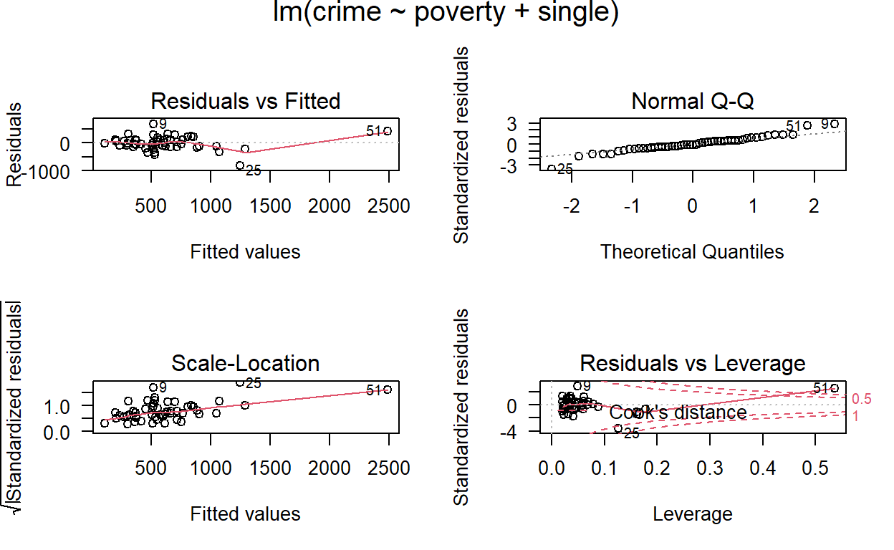
From these plots, we can identify observations 9, 25, and 51 as possibly problematic to our model. We can look at these observations to see which states they represent
cdata[c(9, 25, 51), 1:2]DC, Florida and Mississippi have either high leverage or large residuals. We can display the observations that have relatively large values of Cooks D. A conventional cutoff point is \(4/n\), where \(n\) is the number of observations in the data set. We will use this criterion to select the values to display.
library(MASS)
d1 <- cooks.distance(ols)
r <- stdres(ols) #MASS package is used
a <- cbind(cdata, d1, r)
a[d1 > 4/51, ]We probably should drop DC to begin with since it is not even a
state. We include it in the analysis just to show that it has large
Cooks D and demonstrate how it will be handled by rlm. Now
we will look at the residuals. We will generate a new variable called
rabs, which is the absolute value of the residuals (because the sign of
the residual does not matter). We then print the ten observations with
the highest absolute residual values.
rabs <- abs(r)
a <- cbind(cdata, d1, r, rabs)
asorted <- a[order(-rabs), ]
asorted[1:10, ]Now, lets run our first robust regression. Robust regression is done
by iterated re-weighted least squares (IRLS). The command for running
robust regression is rlm in the MASS package. There are
several weighting functions that can be used for IRLS. We are going to
first use the Huber weights in this example. We will then look at the
final weights created by the IRLS process. This can be very useful.
rr.huber <- rlm(crime ~ poverty + single, data = cdata)
summary(rr.huber)##
## Call: rlm(formula = crime ~ poverty + single, data = cdata)
## Residuals:
## Min 1Q Median 3Q Max
## -846.09 -125.80 -16.49 119.15 679.94
##
## Coefficients:
## Value Std. Error t value
## (Intercept) -1423.0374 167.5899 -8.4912
## poverty 8.8677 8.0467 1.1020
## single 168.9858 17.3878 9.7186
##
## Residual standard error: 181.8 on 48 degrees of freedomhweights <- data.frame(state = cdata$state, resid = rr.huber$resid, weight = rr.huber$w)
hweights2 <- hweights[order(rr.huber$w), ]
hweights2[1:15, ]We can see that roughly, as the absolute residual goes down, the weight goes up. In other words, cases with a large residuals tend to be down-weighted. This output shows us that the observation for Mississippi will be down-weighted the most. Florida will also be substantially down-weighted. All observations not shown above have a weight of 1. In OLS regression, all cases have a weight of 1. Hence, the more cases in the robust regression that have a weight close to one, the closer the results of the OLS and robust regressions.
Now, we will observe the effect of robust regression visually. Consider crime and poverty variables from cdata. Although the poverty does not have a significant effect in ols, we know that poverty and crime have a significant relationship.
cor.test(cdata$poverty,cdata$crime)##
## Pearson's product-moment correlation
##
## data: cdata$poverty and cdata$crime
## t = 4.1449, df = 49, p-value = 0.0001342
## alternative hypothesis: true correlation is not equal to 0
## 95 percent confidence interval:
## 0.2721354 0.6884280
## sample estimates:
## cor
## 0.509508library(ggplot2)
library(gridExtra)
p1<-ggplot(cdata,aes(x=poverty,y=crime))+geom_point()+theme_grey()+ geom_smooth(method = "lm")+labs(title="Linear Reg.")
p2<-ggplot(cdata,aes(x=poverty,y=crime))+geom_point()+theme_grey()+ geom_smooth(method = "rlm")+labs(title="Robust Reg.")
grid.arrange(p1,p2,ncol=2)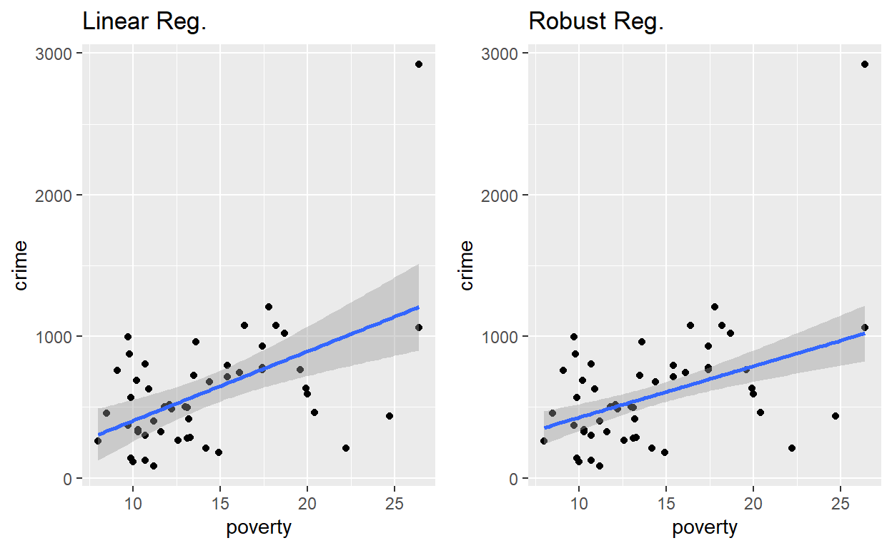
As seen plot, standard error of robust model is lower than the linear model.
ggplot(cdata,aes(x=poverty,y=crime))+geom_point()+theme_grey()+ geom_smooth(method = "rlm",se=F,aes(colour="rlm")) + geom_smooth(method = "lm",se=F,aes(colour="lm"))+labs(title = "Robust and Linear Reg. Lines" )## `geom_smooth()` using formula = 'y ~ x'
## `geom_smooth()` using formula = 'y ~ x'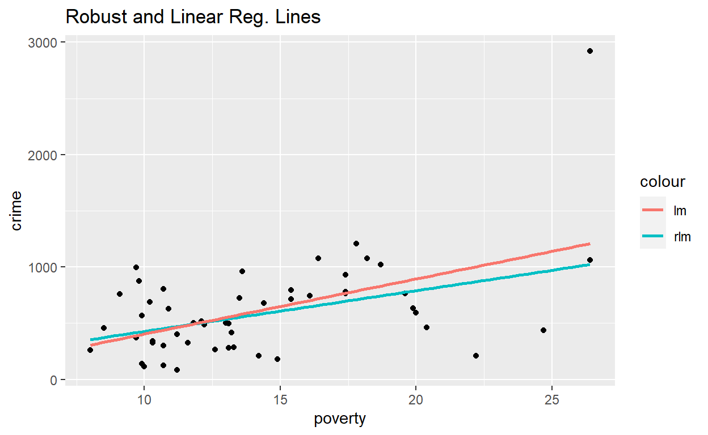
As seen, the linear regression line tends to the outlier compared to robust regression line.
You can change the weight method in Robust Regression. Run the same model, but using the bisquare weighting function. Again, we can look at the weights
rr.bisquare <- rlm(crime ~ poverty + single, data=cdata, psi = psi.bisquare)
summary(rr.bisquare)##
## Call: rlm(formula = crime ~ poverty + single, data = cdata, psi = psi.bisquare)
## Residuals:
## Min 1Q Median 3Q Max
## -905.59 -140.97 -14.98 114.65 668.38
##
## Coefficients:
## Value Std. Error t value
## (Intercept) -1535.3339 164.5062 -9.3330
## poverty 11.6903 7.8987 1.4800
## single 175.9303 17.0678 10.3077
##
## Residual standard error: 202.3 on 48 degrees of freedombiweights <- data.frame(state = cdata$state, resid = rr.bisquare$resid, weight = rr.bisquare$w)
biweights2 <- biweights[order(rr.bisquare$w), ]
biweights2[1:15, ]We can see that the weight given to Mississippi is dramatically lower using the bisquare weighting function than the Huber weighting function and the parameter estimates from these two different weighting methods differ. When comparing the results of a regular OLS regression and a robust regression, if the results are very different, you will most likely want to use the results from the robust regression. Large differences suggest that the model parameters are being highly influenced by outliers. Different functions have advantages and drawbacks. Huber weights can have difficulties with severe outliers, and bisquare weights can have difficulties converging or may yield multiple solutions.
As you can see, the results from the two analyses are fairly different, especially with respect to the coefficients of single and the constant (intercept). While normally we are not interested in the constant, if you had centered one or both of the predictor variables, the constant would be useful. On the other hand, you will notice that poverty is not statistically significant in either analysis, whereas single is significant in both analyses.
Compare Performance of rlm() with
lm()
Lets build the equivalent lm() model so we can compare the errors against the respective fitted values.
Calculate the Errors
Linear Regression
library(DMwR)
regr.eval(cdata$crime, ols$fitted.values)## mae mse rmse mape
## 1.756703e+02 5.585495e+04 2.363365e+02 4.381456e-01Huber
regr.eval(cdata$crime, rr.huber$fitted.values)## mae mse rmse mape
## 1.750825e+02 5.605055e+04 2.367500e+02 4.367968e-01BiSquare
regr.eval(cdata$crime, rr.bisquare$fitted.values)## mae mse rmse mape
## 1.750399e+02 5.736477e+04 2.395094e+02 4.369935e-01As expected, the errors from the robust regression model (Huber) is lesser than the linear regression model. (Based on MAPE)
References: